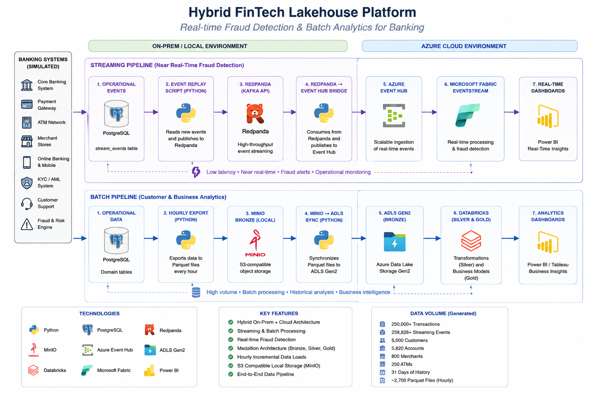

Data Engineering Portfolio Project
Hybrid FinTech
Lakehouse Platform
End-to-end hybrid data engineering platform simulating realistic banking operations, combining PostgreSQL, Redpanda, Azure Event Hubs, Microsoft Fabric, Power BI, MinIO, ADLS Gen2 and a planned Databricks Lakehouse layer.
Realistic banking data platform with batch and streaming pipelines.
The project simulates a modern fintech data platform where operational banking data is produced by multiple source systems and processed through both real-time and batch paths.
It demonstrates historical banking data generation, continuous real-time transaction generation, transactional outbox streaming, Kafka-compatible Redpanda, Azure Event Hubs, Microsoft Fabric Eventstream, Eventhouse / KQL analytics, Power BI reporting and hourly Parquet-based Bronze replication to ADLS Gen2.
Generated banking scale
Historical banking transactions
Operational streaming events
Simulated customers
Historical hourly transaction partitions
Hybrid lakehouse architecture

Real-time fraud monitoring pipeline.
The streaming branch processes operational banking events through a transactional outbox pattern and a Kafka-compatible event pipeline. Historical events can be replayed for repeatable tests, while the real-time generator continuously creates new banking transactions.
Realtime banking generator
→PostgreSQL transactional outbox
→Redpanda
→Azure Event Hubs
→Microsoft Fabric Eventstream
→Eventhouse / KQL
→Fabric Dashboard and Power BI
Transactional outbox
New transactions and matching events are written atomically to PostgreSQL. Only confirmed events are marked as delivered.
Event Hub bridge
A restartable Python bridge forwards events from Redpanda to Azure Event Hubs with batched delivery and safe offset commits.
Fraud analytics
Microsoft Fabric filters high-risk transactions and stores them in Eventhouse for KQL and Power BI monitoring.
Hourly Bronze replication and Databricks Lakehouse direction.
The batch branch exports closed hourly transaction windows from PostgreSQL to MinIO as Snappy-compressed Parquet files and synchronizes the same partitioned Bronze structure to ADLS Gen2.
The next layer is Azure Databricks, where Bronze Parquet data will be transformed into Delta Lake Silver tables and Gold analytical marts for customer, transaction, merchant and fraud-risk analytics.
PostgreSQL to MinIO
Hourly Parquet export at five minutes past each hour.
MinIO to ADLS Gen2
Idempotent partition-level cloud synchronization.
Databricks Silver
Cleansing, typing, deduplication and Delta Lake storage.
Databricks Gold
Analytical marts for Power BI and business reporting.
What this project demonstrates
Hybrid on-premises and cloud data architecture using local services and Azure cloud components.
Batch and streaming processing patterns implemented in one coherent banking scenario.
Kafka-compatible event streaming with Redpanda and Azure Event Hubs integration.
Microsoft Fabric Eventstream, Eventhouse and KQL used for real-time fraud analytics.
Power BI reporting layer combining historical replay events and continuously arriving real-time events.
Databricks Lakehouse branch for Silver and Gold Delta Lake analytical layers.
Portfolio project